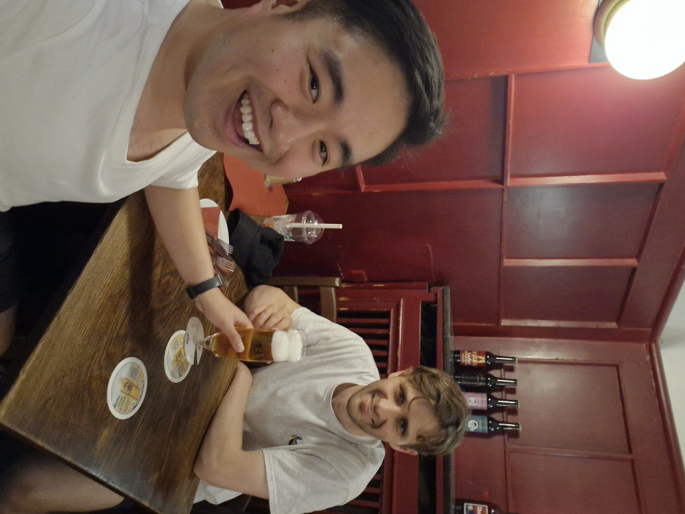
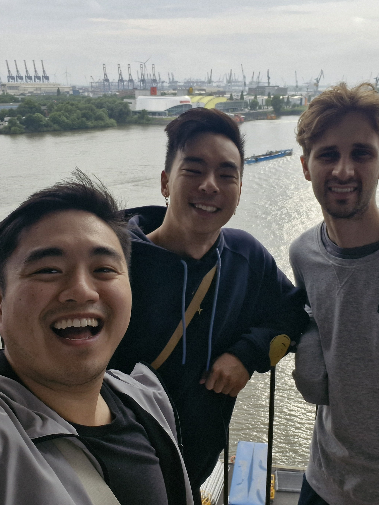
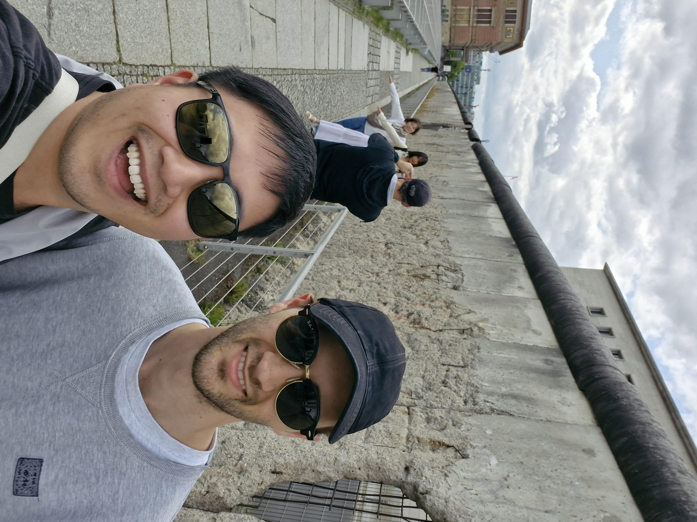
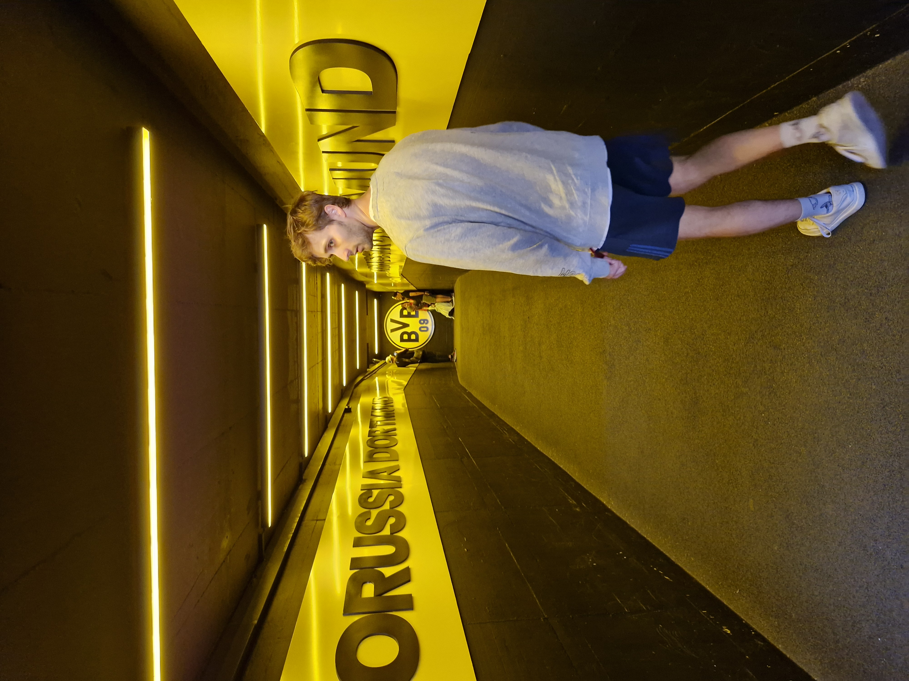
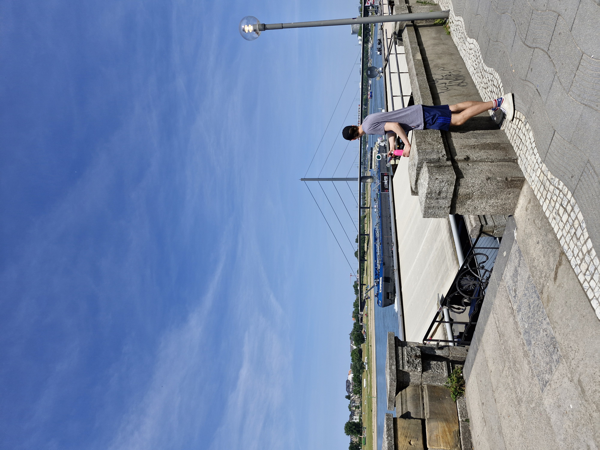
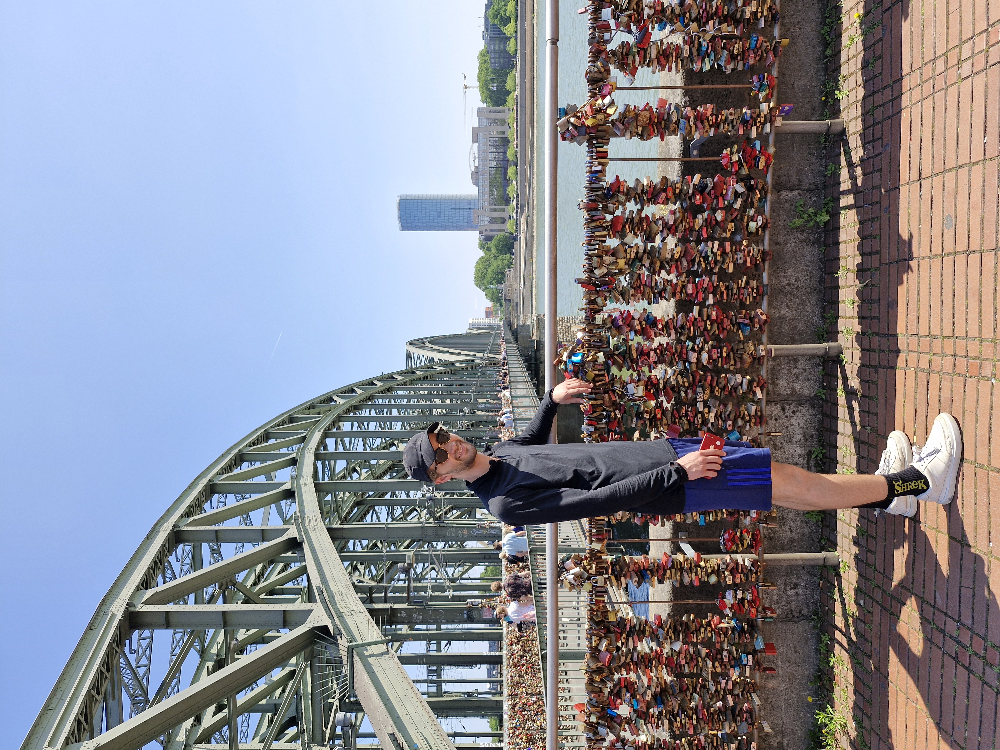
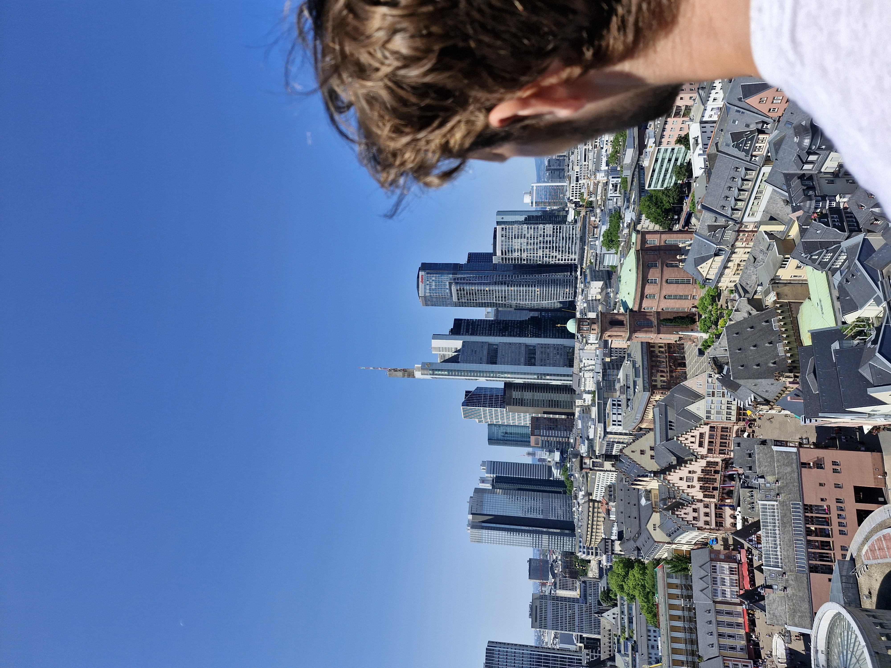

After travelling to London from Australia, Alan and I started an intense trip across the North of Germany

14th June 2025
We took a morning flight from Stansted to Hamburg where we were greeted with heat. Hopping on the train Alan had to stop off for a pretzel which was delicious! We made our way to meet Shanje and Alvin who had let us crash at their place for two nights. We headed out to grab a traditional Bavarian dinner with beers of course! Afterwards we explored the city with Shanje, stumbling across a concert on the river and an impromptu fireworks and drone light show.

15th June 2025
Hungry for some German breakfast, we passed by one of the many strawberry stands on almost every corner. We also stopped by bakery where we tried some sliders with raw pork and a sweet apple pastry which was delicious. Next stop was the Hamburg bunker with 360 degree views of Hamburg including over a stadium. It was used during WW2 as an air defense fortress but was now a recreational place. After a pit stop for lunch we toured around the rest of the city, a history lesson on the origins of Hamburg which is the major port city of Germany, being the only big city with access to the sea. The stunning Elbphilharmonie Hamburg was also a spectacular site to see as it overlooked the 'harbour' of Hamburg. Our final dinner in Hamburg consisted of some dumplings and flamerkuken which was surprisingly delicious!

16th June 2025
An early morning flix train would take us to Berlin where we would start the second leg of our trip. It only got more intense from here as we would only be staying one night in each city from here on out. We started off at the government office Reichstag where the glass dome dominated our attention. A walk to the Brandenburg gate started us off on our journey to learn more about the history of WW2 and the subsequent Cold War. On our journey we visited the Jewish memorial, the topography of terror museum and Checkpoint Charlie. A stop off was required though for some traditional currywurst. Thoroughly 'historied' out we took a break before the Berlin Cathedral before diving back in to see real sections of the Berlin wall. We took a lovely dinner with fresh seasonal ingredients before heading back to the station and relaxing by the river before our bus journey. This bus journey was our accomodation for the night as we made our way to Dortmund overnight. Hopping on the bus at close to midnight was tiring enough but the journey did not allow for a good sleep.

17th June 2025
We dropped bags off at the hotel in Dortmund and went to get some sandwiches for breakfast. Our next stop was Signal Indunda Park, the stadium of Dortmund. We got to walk on the pitch, sit in the surprisingly comfortable bench seats and explore the high tech changing rooms. We went next to a technology museum which had all sorts of cool gadgets. One AI robot was able to direct us around the museum by itself! I then went on a jounrney to a light installation at one of the old factories which used to be used for mining. It depicted animals of the ocean travelling around the walls of the building. I stopped of at a park to read where I met a person from Kyrgstan living in Dortmund before picking us up some delicious kebabs to eat.

18th June 2025
Yet another train took us to Dusseldorf, but not before I had picked us up some bread, cheese and meat for breakfast; very German! Dortmund has a traditional bread with fennel seeds which neither Alan and I had any affinity for. After checking in, we headed on to explore Dusseldorf and came across a large Japanese community. Along with traditional Japanese food, we saw a manga book store as well, who knew there was such a large Japanese community in Dusseldorf. We took a walk along the river Rhine before ending up in a pub for dinner. However, the way they served beer was a little different... You were served a beer straight away and would keep on being served once you had finished your glass. The only way to stop them from serving you more drinks was to place a coaster over your drink. The food itself was delicious as well but after a long day we headed back to relax at the hotel.

19th June 2025
Next stop, Koln! We were placed outside of the Cologne Cathedral which was super impressive. The black colour and the sheer size were what impressed me the most. We did the journey up to the top of the tower which tired us both out which gave us awesome views of the city. After lunch, we took a tour to the Lindt chocolate museum where we learnt about cocao bean, the process of making chocolate, its history and even got to taste some of the yumyy chocolate. Needing to work off the chocolate, I took a bike north along the river Rhine. This was one of the most enjoyable journeys because of the diverse activities and enjoyment that everyone was having. I saw dancing, basketball, football and all sorts of sports. I brought back some pizza for dinner before calling it a night.

20th June 2025
My final day and we had taken a train to Frankfurt. We again found a beutiful cathedral where we could climb another set of stairs and we could get amazing views of the city. We then found a restauraunt serving the famous green sauce which apparently has healing properties. After both rejecting the sauce as it wasn't to our liking we took a stroll in the Palmegarten which contained plants from all over the world. By the time it was finished, I needed to head to the airport which concluded our tour of northern Germany!